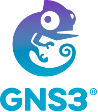
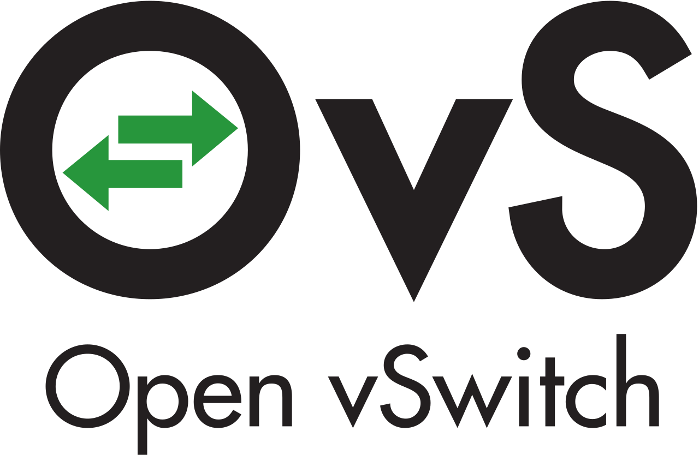
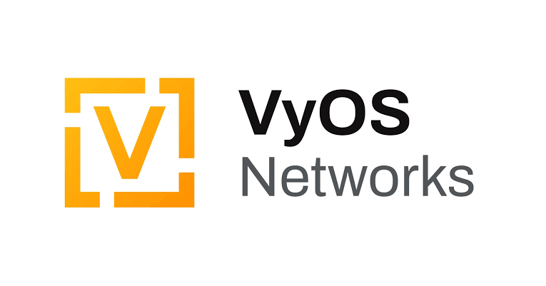

GNS3
For a basic topology design, we simulated a single PC on the earth side and the moon side, each connected through a switch and a router to allow for scalability in the future.

OpenvSwitch
Openvsitch is a open Source software that gets deployed onto actual switch. It has many protocols, such as NetFlow, sFlow, IPFIX, RSPAN, CLI, LACP, 802.1ag, and an easy API.

VyOS
For the router we are using VyOS to allow for complex routing, space laser delay, and simulated networking. It allows for ethernet switching, and easy configuration for vlan VPCs.